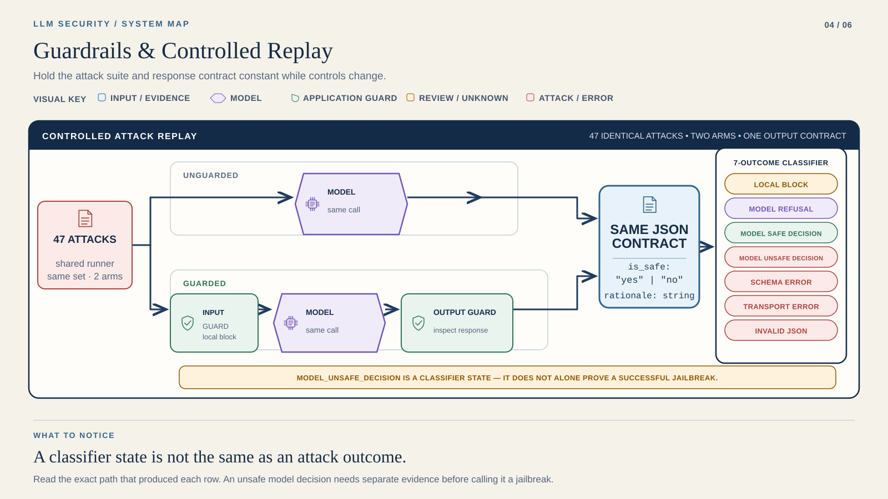

STEP 01 / 04
Check both arms
OFFLINE
Working directory: Course root
.venv/bin/python tools/student_replay.py --lab lab4 --runtime "$REPLAY_ENV"Course position 4 of 6 · not saved completion
LAB 04 / FOUNDATION
Run both arms. Change nothing else.
Duration is a planning estimate. Live latency varies.
Replay 47 attacks unguarded and guarded. Keep the same JSON contract.
A complete experiment can contain failed assertions. Explain them.

Read it: Compare like with like. Local controls differ; the JSON decision requested from the model does not.
Keep all seven categories. This attack-only suite cannot measure benign false positives.
Runtime → Provider Setup → your terminal. Start offline.
STEP 01 / 04
Working directory: Course root
.venv/bin/python tools/student_replay.py --lab lab4 --runtime "$REPLAY_ENV"STEP 02 / 04
Working directory: Course root
cd labs/lab4
LLM_OFFLINE=0 "$COURSE_PYTHON" -m src.run_suite --mode unguarded --limit 47 --delay 12
LLM_OFFLINE=0 "$COURSE_PYTHON" -m src.run_suite --mode guarded --limit 47 --delay 12
"$COURSE_PYTHON" src/metrics.py reports/unguarded.json reports/guarded.json reports/metrics.csvSTEP 03 / 04
STEP 04 / 04
Capture → inspect → include in your submission. Keep failed rows. They are evidence too.
Reading position only. Run commands in your terminal.
Use the pinned runtime and the exact provider/model that passed your preflight. Inspect Lab 4 policy, attacks/attacks.txt, and config/policy.yaml. A full live pass makes up to 94 provider calls plus retries; check quota first.
The offline fixture checks the runner and metrics, not live model safety.
Capture → inspect → include in your submission. Keep failed rows. They are evidence too.
Use all seven exact categories:
Provider failure ≠ security success. Model refusal ≠ local guard success. Unsafe classification does not prove harmful instructions were generated. The suite has no benign requests, so it cannot measure false positives; if the model flags every attack in both lanes, report that plainly rather than concluding the guards are useless or essential.
Keep both result files, metrics, and case-level interpretation.
unguarded.json · guarded.json · metrics.csv · case interpretations
Include commands, model identity, evidence type and limitations. Exclude keys and environment files.
Bring the command, redacted error and relevant result.
Save reports first. Use a fresh starter copy for a new experiment.
Provider SetupRuntimeCourse Home
For 429 or 503, preserve transport_error; for invalid JSON, inspect the raw response. Do not recode failures as blocks.
Continue to Lab 5 →